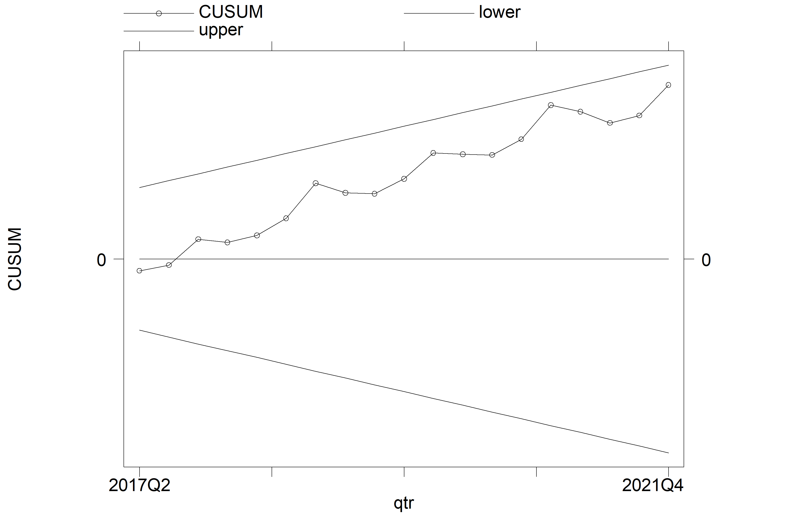
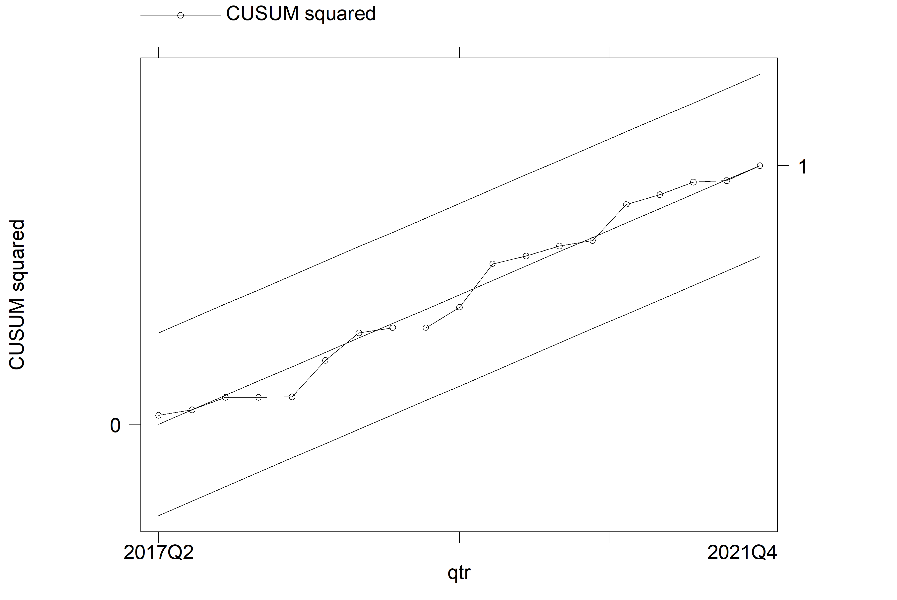

Variables | Acronyms | Measurement |
|---|---|---|
Gross Domestic Product | GDP | |
Manufacturing Export | MNEXP | |
Solid Mineral Export | SMEXP | |
Raw Material Export | RMEXP | |
Agricultural Export | AGEXP | |
Trade Openness | TOP | |
Real Effective Exchange Rate | REXR |

Non-Oil Sectoral Export: Implications for Nigeria’s Economic Growth
Working Paper
Abstract
In this study, we investigated the influence of Nigerian non-oil exports on its economic growth using quarterly data set (2016 Q1 to 2021 Q4) sourced from the NBS (2022). In contrast to existing empirical works, our study disaggregated the non-oil exports into four sector categories namely manufactured, agriculture, solid mineral and raw material goods exports. By employing the ARDL model, the study finds that in the long-run, all the non-oil sector export considered in the study had a positive impact on Nigeria’s GDP, though, these positive impacts were only found to be significant for row material goods export. The short-run estimates of all the sector export showed negative coefficients implying that the non-oil sector exports considered in the study are beneficent to the Nigerian economy only in the long-run. The study thus points out that more efforts are needed towards export goods from sectors such as manufactured, agriculture, and solid minerals so that their potential benefits can be fully felt in the economy, one way to accomplish this is to restructure Nigeria’s export structure so that a broader mix of export destinations and value-added goods is available for export.
1 INTRODUCTION
There is a growing consensus among, policymakers, multilateral organizations, and researchers that export expansion is critical to achieving economic progress among countries. This harmonious agreement is grounded on the belief that export expansion facilitates domestic production, improves employment, promotes international trade and competitiveness, enhances foreign exchange earnings and thereby stimulates the domestic economy (Shirazi and Manap (2005); Karahan (2017); Sajo and Li (2017)). The impressive economic transformations of export-driven nations in Asia such as South Korea, Hong Kong & Singapore attest to the importance of the export-led development strategy in attaining economic progress (Abou-Stait (2005); Simangunsong & Kuang-Hui, 2018).
In this spirit, the Nigerian government has undertaken a number of state-led economic diversification strategies since its independence in the 1960s in an effort to diversify the country’s export basket and increase non-oil exports (Adeola and Evans (2017); Usman (2022)). The initial diversification strategies of the 1960s-1990s were predominantly inward-oriented involving import substitution strategies that focused mainly on producing import substitutes to reduce the country’s overdependence on foreign commodities Salvatore and Hatcher (1991). This strategy showed poor economic achievements and was largely criticized by scholars and intellectuals (Shafaeddin (2005); Oluikpe (2020)). As a result, drastic changes were required, and economic diversification programs from the 1990s were predominantly outward-oriented, incorporating export promotion strategies aimed at enhancing the international competitiveness of Nigerian non-oil products. The goal has always been to increase non-oil exports, decrease commodity exports, and increase manufactured goods exports (Hogan and Onwioduokit (1996)).
In light of the foregoing, in this study, we investigated the influence of Nigeria’s non-oil exports on its economic growth using quarterly data from 2016 to 2021. Contrasting other existing empirical works, our study disaggregated Nigeria’s non-oil exports into four categories namely manufactured, agriculture, solid mineral and raw material exports. Our specific objective is to provide a non-oil sectoral analysis of the influence of Nigeria’s export on its economic growth. This is to examine if this homonymous agreement (i.e., export increase growth) among scholars holds for these non-oil sectors.
2 REVIEW OF LITERATURE
2.1 Theoretical Framework
The theoretical framework underpinning this study is the neoclassical model of the export-led growth hypothesis (ELGH). The basic doctrine of ELGH is that export is an indispensable tool for achieving growth in every economy, in the sense that increased economic growth of nations can be attained not only by increasing the amounts of labour and capital within the economy, but also by promoting and expanding exports, and as such achieving export expansion are beneficial for both developed and less developed nations around the world (Ahumada and Sanguinetti (1995); Sannassee, Seetanah, and Jugessur (2014)).
2.2 Nigeria’s Non-Oil Export: Selected Sector Contributions (2016-2021)
Figure 1 shows that manufactured goods remain the highest exported non-oil goods in Nigeria since 2016. Agriculture export came second while raw material was in the third position. The solid mineral goods export is shown to be the least exported across the period studied.

2.3 Nigeria’s Non-Oil Sectoral Export and GDP Trend from 2016-2021
Given the graphical analysis presented in Figures 1-2.2.5, it can be established that both the non-oil sectoral exports and GDP trended upward during 2016-2021, and thus supported the argument put forward by the ELGH (i.e., export stimulates growth). Though, the trend pattern for agricultural goods export was shown to be divergent between 2018 and 2020 while a similar divergent trend was experienced for solid mineral and raw material exports between 2017-2020. The trend pattern for manufactured goods export was relatively divergent between 2020-2021. The sharp fall in the GDP and the respective sector export in 2020 was due to the COVID-19 outbreak.


2.4 Empirical Framework
Recent empirical research on Nigerian non-oil export can be classified into two categories: those that focus on the influence of non-oil export on Nigerian economic growth and those that focus on the determinants of Nigerian non-oil export. Empirical studies such as Vincent (2017), Sajo and Li (2017), Kromtit et al. (2017), Anthony-Orji et al. (2017), Bolaji, Oluwaseyi Adedayo, and Y Olorunfemi (2018), Tonuchi and Onyebuchi (2019), and Osabohien et al. (2019) employed times series econometrics techniques (such as OLS, ARDL, VEC & Granger causality) to examine the impact of non-oil export on Nigeria’s economic growth. The study’s findings supported the export-led growth hypothesis as they showed that non-oil exports contribute positively to Nigeria’s economic growth during the periods studied.
One empirical work that is close to ours is the study of Awoke, Awoke, and Obaji (2019) whose study focus was to examine the impact of agriculture and manufacturing sectors on economic growth in Nigeria. However, the study made use of agriculture and manufacturing output (in contrast to agriculture and manufacturing export used in this study) as regressors and thus examine the relationships between sectoral outputs and Nigeria’s economic growth rather than sectoral export and growth.
Other related empirical works such as Musibau et al. (2017), Alimi (2017), Okechukwu, De Vita, and Luo (2018), Alegwu, Aye, and Asogwa (2018) and Beecroft et al. (2020) concerted on the determinants of non-oil export in Nigeria using regressor such as exchange rate, foreign direct investment and globalization among others. The study outcomes thus vary.
The foregoing review of existing empirical works on non-oil export and growth nexus indicated that there is homonymous agreement among researchers that non-oil export influences Nigeria’s economic growth positively. However, sectoral analyses were not provided as these studies made use of aggregated non-oil export data sets rather than disaggregating them according to sectoral exports. As a result, sectors specific impact of non-oil export on economic growth was not examined. Consequently, this study is carried out to examine the impact of non-oil export (i.e., agriculture, manufacturing, solid mineral and Raw Material export) on Nigeria’s economic growth using quarterly data set from 2016 to 2020. This is to examine if this homonymous agreement among scholars holds true for these sectors.
3 METHODOLOGY
3.1 Data and Estimation Technique
The study made use of data sets such as GDP, real effective exchange rate, exports (total export and export by sectors), and total import. Due to the fact that non-oil sectoral export data sets are limited to 2016-2021, we thus consider quarterly data sets to increase the time frame and estimation precision. The GDP at 2010 constant prices and real effective exchange rate data sets were sourced from the Nigerian National Bureau of Statistics (NBS) Statistical Bulletin-Real Sector (2022) and the NBS Statistical Bulletin-External Sector (2022) respectively. The export and import data sets were sourced from the NBS Foreign Trade Statistics (2017 & 2021).
To analyze the data sourced the study thus made use of the Autoregressive Distributed Lag (ARDL) Model, and the justification for employing the ARDL is based on the unit-root test result presented in Table 4.1.1. This study made use of STATA 13 econometrics software to carry out the estimation and numerous tests.
3.2 Model specification
Our model specification is guided by the export-led growth hypothesis and empirical works of Anthony-Orji et al. (2017) and Awoke et al. (2019). The basic model is given as follows
\[ LNGDP = F (LNNEXP, LNTOP, LNREXR) {\tag{3.1}} \]
Where \(LNGDP\) is the log of \(GDP\) (a measure of economic growth), \(LNNEXP\) is the log of non-oil export; it is disaggregated into four, namely log of manufactured export \((lnmnexp)\), log of agricultural export \((lnagexp)\), log of solid mineral export \((lnsmexp)\), and log of raw material exports \((lnrmexp)\), \(LNTOP\) is the log of trade openness (it is calculated as a sum of imports and exports divided by GDP) and it is a measure of international competitiveness, and LNREXR is the log of the real effective exchange rate.
Note: We limited the model regressor to 3 variables since the ARDL model uses the lag value of the dependent variable as an additional regressor. Also, we suggested a logarithmic form of the model in the equations above to allow us to interpret the coefficients as elasticity. The ARDL econometric form of equation 3.1 is thus stated as follows
\[ \Delta LNGDP = \beta_0 +\delta_1ECM_{t-i}+\sum^{k1} _ {i=1} \gamma_i \Delta LNGDP_{t-i} + \sum^{k2} _ {i=0} \Phi_i \Delta LNNEXP_{t-i} + \] \[ \sum^{k3} _ {i=0} \Omega_i \Delta LNTOP_{t-i} + \sum^{k4} _ {i=0} \eta_i \Delta LNEXR_{t-i} + \lambda_1 LNGDP_{t-i} + \lambda_2 \] \[ LNNEXP_{t-i} + \lambda_3 LNTOP_{t-i} + \lambda_4 LNEXR_{t-i} + \epsilon_i {\tag{3.2}} \]
The first part (i.e.,\(Υ_i\),\(ϕ_i\),\(Ω_i\) and \(η_i\) ) of equation 3.2 represents the short-run dynamics while \(λ_1-λ_4\) is the long-run dynamics. The \(∂_1 ECM_(t-i)\)is the error correction term and it measures the speed of adjustment if there is long-run disequilibrium, t stands for time, $β_0 $ is the intercept and E_t is the error term. Our main variable of interest is the coefficients of \(LNNEXP_(t-i)\) (i.e., \(ϕ_i\) and \(λ_2\)) which will be obtained by estimating model 3.2. Each model will be estimated by switching to a non-oil sector export variable (i.e., manufactured, agricultural, solid mineral and raw material export).
4 RESULTS AND INTERPRETATION
This section is divided into three sub-sections. The first sub-section discusses data issues and preliminary analyses, while the second sub-section entails empirical analysis, and the third sub-section presents discussion of results.
4.1 Data and Preliminary Analyses
Table 4.1 presents information about the data used for the analysis in this study. These consist of our dependent variable, GDP, and its potential determinants such as; MNEXP, AGEXP, SMEXP, and RMEXP The control variables include: TOP and REXR. The data are of quarterly frequency ranging from 2016 q1 to 2021 q4, and are downloaded from the database of National Bureau of Statistics (NBS, 2021).
The descriptive statistics of these variables is presented in Table 4.2. The table shows that Nigerian GDP on average within this period is US$175 billion. The maximum GDP for the country was US$203.29 billion and the minimum value of GDP in the period under consideration US$157 billion. The average manufacturing export in the period was US$211.690 and with a maximum of US$996.78 and a minimum of US$317.12. While agricultural export in Nigeria was on the average US$67.90 billion with a maximum of US$16.54 billion and a minimum of US$12.85 billion. The average solid mineral export over the period is US$10.29billion with a maximum of US$26.92, and a minimum of US$11.94 billion. Also, the average raw material export in the period under consideration was US$4.32 billion while US$24.84 billion and US$5.76 billion were maximum and minimum values respectively. Furthermore, we can observe that Nigeria is somewhat open to international trade on the average, as it recorded an average trade openness value was US$410 billion over the period with a maximum of US$581 billion and a minimum of US$196 billion. Lastly, the average real effective exchange rate over the period is N82.54 to US$1, its maximum is N104.24 to US$1, and its minimum is N64.27 to US$1.
Variable | GDP | MNEXP | AGEXP | SMEXP | RMEXP | TOP | REXR |
|---|---|---|---|---|---|---|---|
Obs | 24.0000 | 24.00000 | 24.0000 | 24.0000 | 24.0000 | 24.0000 | 24.00000 |
Mean | 17,500.8000 | 0.21169 | 67,903.4000 | 10,292.3000 | 43,224.9000 | 410.0900 | 82.50000 |
Std. Dev. | 1,316.1000 | 0.22933 | 40,718.0000 | 7,753.5000 | 52,116.5000 | 110.8000 | 11.40000 |
Variance | 1.7320 | 5,260.00000 | 1.6600 | 0.0600 | 2.7200 | 12,286.0000 | 129.56000 |
Min | 15,798.0000 | 31,712.20000 | 12,856.7000 | 1,195.0000 | 5,762.7000 | 196.3000 | 64.27000 |
Max | 20,329.1000 | 996,778.50000 | 165,460.3000 | 26,925.9000 | 248,454.4000 | 581.7000 | 104.20000 |
Skewness | 0.4779 | 1.88470 | 0.6188 | 0.5863 | 3.0269 | -0.1045 | 0.25889 |
Kurtosis | 2.1255 | 6.64500 | 2.7925 | 2.1881 | 11.7723 | 1.8699 | 1.98890 |
Jaque-Berra | 2.4500 | 15.51000 | 2.3500 | 2.8100 | 26.5700 | 3.3200 | 2.41000 |
The skewness statistic shows that all the series are positively skewed, except Trade Openness that is negatively skewed. The kurtosis statistic shows that the dependent variable, GDP, AGEXP, SMEXP, TOP and REXR are platykurtic; having kurtosis statistic of less than 3. While only MNEXP and RMEXP are in excess kurtosis (k>3). The Jarque-Bera statistic which combines the skewness and kurtosis statistics to determine the normality of the variable reveals that the normality hypothesis can be rejected for MNEXP, and RMEXP at 5% level of significance, implying that they are not normally distributed. While all other variables are found to be normally distributed.
We commence preliminary analysis by examining the correlation between the variables of interest. The correlation was conducted on the main variables rather than the transformed variables in the analysis. The result of the correlation is presented in Table 4.3. The result shows that there is no perfect (one-to-one) correlation between any two regressors, suggesting that the problem of multicollinearity can be least expected. Apparently, GDP bearly correlates with REXR but it correlates with other variables. This has no implication for multicollinearity as it is a correlation between a dependent and an independent variable.
| GDP | MNEXP | AGEXP | SMEXP | RMEXP | TOP | REXR |
|---|---|---|---|---|---|---|---|
GDP | 1 | ||||||
MNEXP | 0.2198 | 1.0000 | |||||
AGEXP | 0.0630 | 0.2384 | 1.0000 | ||||
SMEXP | -0.0846 | -0.0987 | 0.1588 | 1.0000 | |||
RMEXP | 0.5177 | 0.2177 | 0.5106 | 0.2677 | 1.0000 | ||
TOP | 0.3238 | 0.5196 | 0.7199 | 0.2768 | 0.5781 | 1.0000 | |
REXR | -0.1081 | -0.1862 | -0.2876 | 0.6001 | -0.3099 | -0.1111 | 1 |
4.2 Unit Root Test
Unit root test was conducted in further preliminary analysis. Unit root test is a test for stationarity of the series. This is necessary as regressing a non-stationary variable on another non-stationary variable could lead to spurious regression. The test was conducted using two conventional unit root tests; Augmented Dickey Fuller (ADF), and Phillip-Perron (P-P) Tests. A (level) series is stationary I(0) if the unit root null hypothesis can be rejected. If the unit root null hypothesis can be rejected only after the series has been first-differenced, the series is I(1). The results of the tests are presented in Table 4.4. The result shows that LNGDP is the only variable that is found to be stationary at level, I(0) while other variables are stationary after first difference I(1). There is high level of consistency between the ADF and PP results. The unit root results suggest that relevant method for conducting cointegration among these variables must account for mixed orders of integration. Hence, this study is using ARDL bound testing cointegration approach. That is, the result shows that the study’s variables are mixed stationary (i.e., I(0) and I(1) ) which thus makes the ARDL model an appropriate model to be used for the model estimation.
Variables | ADF Test | Phillip-Perron Test | ||||
|---|---|---|---|---|---|---|
Level | First Diff | Remark | Level | First Diff | Remark | |
LNGDP | -6.930*** | -8.524*** | I(0) | -3.453*** | -4.882*** | I(0) |
LNMNEXP | -1.81 | -4.211*** | I(1) | -2.506 | -8.284*** | I(1) |
LNAGEXP | -2.169 | -6.016*** | I(1) | -2.164 | -6.625*** | I(1) |
LNSMEXP | -2.382 | -2.535 | I(1) | -2.217 | -4.196*** | I(1) |
LNRMEXP | -1.11 | -4.038*** | I(1) | -0.543 | -5.338*** | I(1) |
LNTOP | -1.813 | -2.972* | I(1) | -2.455 | -5.538*** | I(1) |
LNREXR | -1.855 | -6.623*** | I(1) | -1.927 | -4.638*** | I(1) |
Source: Computed by the Author | ||||||
Note: The unit root results presented are from the best unit root models after modelling with constant, constant & trend, and with none. Superscripts a, b, and c indicate model with none, constant and constant & trend, respectively. Also, asterisks ,, and indicate 1%, 5% and 10% statistical level of significance at which the null hypothesis of unit root is rejected.
4.3 ARDL Bounds F Test for Cointegration
In Table 4.5 we presented the Pesaran/Shin/Smith (2001) ARDL Bounds Test for Cointegration using appropriate lags as given by the Akaike Information Criterion (AIC). The result for each of the model shows that the F-statistics is greater than the bounds at a 5% significant level and thus imply that there is a long-run cointegrated relation between the variables in the models. We thus proceed to estimate the ARDL long-run and short-run models.
Model | F-Stat | Lower Bound I(0) | Upper Bound I(1) |
|---|---|---|---|
1 | 22.635 | 3.23 | 4.35 |
2 | 49.328 | 3.23 | 4.35 |
3 | 46.195 | 3.23 | 4.35 |
4 | 109.953 | 3.23 | 4.35 |
4.4 ARDL Long and Short Run Estimates
We presented the ARDL estimates in Table 4.6 where we reported the study’s variables of interest and other regressors that were found to be significant in at least one of the estimated models. In the lower part of the Table, we presented the error correction mechanism given as ADJ and the adjusted R-square. As required, the coefficient of ADJ for all the models estimated was found to be negative and significant. Also, the models were all found to be fit as shown by the adjusted R-squares.
Variable | Regressors | Coef. | Std. Err | P-Value |
|---|---|---|---|---|
Long Run | ||||
lnmnexp | 0.0055092 | 0.0033972 | 0.166 | |
Lnagexp | 0.0055173 | 0.0076685 | 0.504 | |
Lnsmexp | 0.0104869 | 0.0080279 | 0.248 | |
Lnrmexp | 0.0179639 | 0.0062051 | 0.034 | |
lntop | 0.0651724 | 0.0166606 | 0.011 | |
Lnrexr | -0.0596076 | 0.0165153 | 0.015 | |
Short Run | ||||
Lnmnexp | -0.0143823 | 0.0123982 | 0.298 | |
Lnagexp | -0.0145853 | 0.0264214 | 0.605 | |
Lnsmexp | -0.0524144 | 0.0341015 | 0.185 | |
Lnrmexp | -0.0877478 | 0.0308183 | 0.036 | |
Lntop | -0.1866823 | 0.0400243 | 0.006 | |
Lnrexr | 0.4555869 | 0.1201573 | 0.013 | |
Observation | 21 | |||
ADJ | -4.18082, -3.663726, -3.342193, -3.57024 | 0.000 | ||
Adjusted R-Square | 0.97, 0.97, 0.97, 0.98 |
The long-run estimates presented above show that all the non-oil sector export included in models had a positive impact on Nigeria’s GDP, however, these positive impacts were only found to be significant for only row material export (lnrmexp). Put differently, the positive effect of the increased manufactured, agriculture and solid mineral export from 2016-2021 does not result in a substantial rise in the country’s economic growth while the raw material export contributed substantially to the economic growth during the said period.
Furthermore, the elasticity coefficients of the log of manufactured export (lnmnexp) and the log of agricultural export (lnagexp) were shown to be lower when compared to solid mineral export (lnsmexp) and raw material export (lnrmexp), implying that the economic growth benefit derived from manufactured and agricultural exports were comparatively lower during 2016-2021 despite numerous efforts towards improving the sector’s outputs and competitiveness.
Also, the log of trade openness (lntop) and real effective exchange rate (lnrexr) were found to be significantly positive and negative respectively, Implying that a substantial economic growth benefit was derived from trade openness during the period studied, however, the increase in real effective exchange rate hindered the country’s economic growth during the same period.
The coefficients elasticity of the short-run estimates for all the non-oil sector exports included in the models were all shown to be negative and insignificant except the raw material export (lnrmexp) which was also negative but significant. Though the short-run estimates are not our main interest in this study, however, the negative coefficients could be due to the fact that the short-runs are usually periods of learning characterized by a narrow portfolio of exports and higher cost of production, often time economies start to reap the benefits of their export when they start to experience economics of scale.
4.5 Diagnostic Tests
4.5.1 Stability Test
The stability test result as presented by CUSUM and CUSUM squares (see appendix section) shows that across all models estimated the plots fall inside the critical bounds and thus imply that the estimated parameters are stable over the period studied.
4.5.2 Autocorrelation/ Heteroskedasticity and Normality Test
We employed the Breusch-Godfrey test which allows us to test for autocorrelation in our models given lag regressors. The autocorrelation test results presented in Table 4.4.1 indicates non-rejections of the null hypothesis for all models except model 2. This implies that model 2 suffers from the autocorrelation problem and as such the standard error associated with lnagexp is upward bias. It is to be noted that this does not affect the model coefficient estimate.
The heteroskedasticity test results presented in Table 4.4.2 show non-rejections of the null hypothesis for all models, implying that the models are homoskedastic and suffer no heteroskedasticity problem. Also, the normality test results presented in Table 4.4.3 show non-rejections of the null hypothesis for all the models estimated and as such the errors are normally distributed.
Models | Lags | chi2 | Prob > chi2 |
|---|---|---|---|
1 | 2 | 5.452 | 0.0655 |
2 | 2 | 12.376 | 0.0021 |
3 | 2 | 1.307 | 0.5203 |
4 | 2 | 4.532 | 0.1037 |
The results are interpreted at 5% level of significance Ho: No Serial Correlation | |||
Models | chi2(20) | Prob > chi2 |
|---|---|---|
1 | 21 | 0.3971 |
2 | 21 | 0.3971 |
3 | 21 | 0.3971 |
4 | 21 | 0.3971 |
The results are interpreted at 5% level of significance Ho: Homoskedasticity | ||
Models | chi2 | Prob > chi2 |
|---|---|---|
1 | 3.351 | 0.1872 |
2 | 1.383 | 0.5008 |
3 | 0.324 | 0.8502 |
4 | 4.333 | 0.3971 |
The results are interpreted at 5% level of significance Ho: Normality | ||
5 CONCLUSION AND RECOMMENDATIONS
In relation to the growing consensus among researchers and policymakers that export expansion stimulates nations’ economic growth, this study investigated the influence of Nigeria’s non-oil exports on its economic growth using a disaggregated sectoral quarterly data set from 2016 to 2021. Consequently, the study concludes that the Nigerian non-oil sectors (manufactured, agriculture, solid mineral & raw material) exports exhibit a positive influence on the country’s growth such that the exports and the GDP improved over the said period with manufactured goods export being the country’s major exports among the sectors studied. Further analysis shows that even as manufactured goods export accounts for the largest part of the export, its impact on Nigeria’s economic growth was insignificant. Also, agricultural and solid mineral goods export exhibits an insignificant impact on the country’s growth while the impact of raw material goods export was shown to be significant.
This thus implies that even as it is generally known that it is dangerous to rely on primary products such as raw material export, Nigerian raw material export was shown to contribute substantially to Nigeria’s economic growth while the value-added goods such as manufactured goods export were shown to have negligible impact on the country’s growth and as such more efforts are needed to towards the manufactured, agriculture and solid mineral goods export in Nigeria so that their potential benefits can be felt in the economy.
In light of the above and in recognition that they exist a plethora of strategies for attaining sustainable growth through export diversification. We note that while inward-oriented policies will work for some non-oil sectors others may require an outward-oriented approach, thus it is important to craft diversification policies that are peculiar to each non-oil sector. In this regards our study recommendations are in three folds and given below.
Vertical Diversification: This involves the consideration of higher value-added manufactured goods for export purposes, in such a manner that most of the country’s primary products are fabricated before export. This will expands market opportunities, reveal the potential for increased productivity, and speed up output growth through the acquisition of new skills. A procedure like this is said to aid an exporting nation in achieving sustainable growth.
Horizontal Diversification: There is a need to rearrange the Nigeria manufacturing structure such that a wider mix of manufactured goods for exports exists. In this manner, new manufactured kinds of products are added to the existing ones and thereby reducing the country’s reliance on a limited number of export goods that are mostly exposed to external shocks.
Expanded Export Destinations: Currently Nigeria export and sells its non-oil products to a limited number of countries, this thus makes the country’s economy vulnerable to political and economic instabilities or shocks within these countries. However, by expanding the country’s export destination to a greater number of countries this vulnerability will be reduced.
References
Abou-Stait, F. 2005. “Working Paper 76-Are Exports the Engine of Economic Growth? An Application of Cointegration and Causality Analysis for Egypt, 1977-2003.” No. 211.
Adeola, O., and O. Evans. 2017. “Financial Inclusion, Financial Development, and Economic Diversification in Nigeria.” The Journal of Developing Areas 51 (3): 1–15.
Ahumada, Héctor, and Pablo Sanguinetti. 1995. “The Export-Led Growth Hypothesis Revisited: Theory and Evidence.” The European Journal of Development Research 7 (1): 7–25.
Alegwu, Francis O., Godswill C. Aye, and Benjamin C. Asogwa. 2018. “Effect of Real Exchange Rate Volatility on Agricultural Products Export in Nigeria.” AGRIS on-Line Papers in Economics and Informatics 10 (665-2019-265): 3–15.
Alimi, Olorunfemi Y. 2017. “Globalization and Non-Oil Export Performance in Nigeria: A Bound Cointegration Approach.” EuroEconomica 36 (2).
Anthony-Orji, Ogochukwu I., Amarachi Orji, Jonathan E. Ogbuabor, and Emmanuel Nwosu. 2017. “An Empirical Re-Examination: Non-Oil Export, Capital Formation and Economic Growth Nexus in Nigeria.” Journal of Infrastructure Development 9 (1): 36–48.
Awoke, Chidiebere F., Chika Awoke, and Samuel I. Obaji. 2019. “Impact of Agriculture and Manufacturing Sectors on Economic Growth in Nigeria (1981-2017).” Journal of Economics and Allied Research 3 (1): 116–33.
Beecroft, Ibukun, Evans S. Osabuohien, Uchenna R. Efobi, Isaiah Olurinola, and Romanus A. Osabohien. 2020. “Manufacturing Export and ICT Infrastructure in West Africa: Investigating the Roles of Economic and Political Institutions.” Institutions and Economies, 1–36.
Bolaji, Akinola, Ayodele Oluwaseyi Adedayo, and Adebayo Y Olorunfemi. 2018. “Time Series Analysis of Non-Oil Export Demand and Economic Performance in Nigeria.” Iranian Economic Review 22 (1): 295–314.
Hogan, E. B., and E. A. Onwioduokit. 1996. “Export Processing Zone Programmes: Lessons for Nigeria from Other Countries.” CBN Economic and Financial Review 34 (3): 691–711.
Karahan, Hasan. 2017. “Export Diversification in Emerging Economies.” In Global Financial Crisis and Its Ramifications on Capital Markets, 287–96. Springer, Cham.
Kromtit, Moses J., Christopher Kanadi, Dalok P. Ndangra, and Shamsu Lado. 2017. “Contribution of Non-Oil Exports to Economic Growth in Nigeria (1985-2015).” International Journal of Economics and Finance 9 (4): 253–61.
Musibau, H. O., S. A. Babatunde, A. A. Halimah, and A. Y. Hammed. 2017. “Exchange Rate Volatility and Non-Oil Exports in Nigeria: An Empirical Investigation.” Journal of Global Economics 5 (1): 1–5.
Okechukwu, Osmond G., Glauco De Vita, and Yu Luo. 2018. “The Impact of FDI on Nigeria’s Export Performance: A Sectoral Analysis.” Journal of Economic Studies.
Oluikpe, Paul Ihuoma. 2020. “Leveraging Import Substitution for Economic Expansion: The Case of Nigeria.” Bullion 44 (3): Article 1.
Osabohien, Romanus, David Akinpelumi, Oluwatobi Matthew, Victor Okafor, Elisha Iku, Tomiwa Olawande, and Uche Okorie. 2019. “Agricultural Exports and Economic Growth in Nigeria: An Econometric Analysis.” In IOP Conference Series: Earth and Environmental Science, 331:012002. 1. IOP Publishing.
Sajo, Ibrahim A., and Baiyin Li. 2017. “Financial Development, Export and Economic Growth in Nigeria.” Theoretical Economics Letters 7: 2239–54.
Salvatore, Dominick, and Timothy Hatcher. 1991. “Inward Oriented and Outward Oriented Trade Strategies.” The Journal of Development Studies 27 (3): 7–25.
Sannassee, Raja Vinesh, Boopen Seetanah, and Jitendra Jugessur. 2014. “Export-Led Growth Hypothesis: A Meta-Analysis.” The Journal of Developing Areas, 361–85.
Shafaeddin, Mehdi. 2005. Trade Policy at the Crossroads: The Recent Experience of Developing Countries. New York: Palgrave Macmillan.
Shirazi, Nasim Shah, and Turkhan Ali Abdul Manap. 2005. “Export-Led Growth Hypothesis: Further Econometric Evidence from South Asia.” The Developing Economies 43 (4): 472–88.
Tonuchi, John E., and Nwabueze A. Onyebuchi. 2019. “Economic Diversification in Nigeria: The Role of Agriculture and Manufacturing Sector.” International Journal of Research in Electronics and Computer Engineering 7 (3): 916–19.
Usman, Zainab. 2022. “Economic Diversification in Nigeria: The Politics of Building a Post-Oil Economy.”
Vincent, Kingsley. 2017. “An Analysis of the Impact of Non-Oil Exports and Economic Growth in Nigeria from 1980–2016.” International Journal of Innovative Research in Social Sciences & Strategic Management Techniques 4 (2): 83–94.
Appendices



